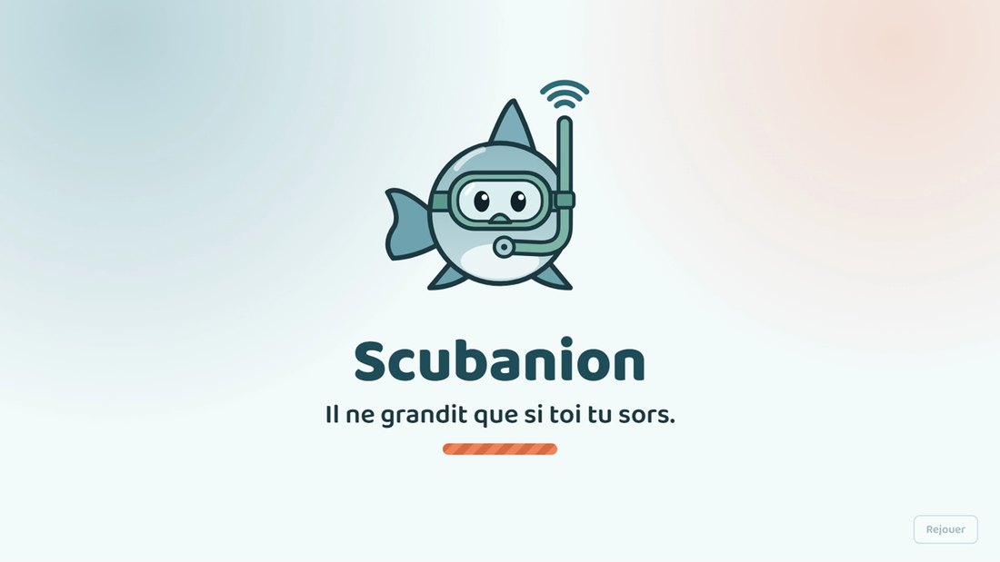

Les quatre P appliqués à Scubanion : le bon produit, à la bonne place, au bon
prix et au bon moment. Structure reprise du cours — partie 3,
« Le marketing mix ».
Produit
Application Android + réseau de bornes IoT
Marché pilote
Paris intra-muros · 11e et 19e
Équipe
Scubatana · 4 étudiants
Version
1.0 du 13/10/2026
« Il ne grandit que si toi tu sors. »
0Vue d'ensemble
Le marketing mix regroupe l'ensemble des décisions marketing qui assurent le succès
d'un produit sur son marché. La qualité de la stratégie ne tient pas à
chaque élément pris isolément, mais à leur cohérence : le bon produit, à la
bonne place, au bon prix et au bon moment.
Produit
Un compagnon virtuel qui ne grandit que si son propriétaire sort, et des bornes qui récompensent le déplacement réel.
Prix
Gratuit pour le joueur, cosmétiques à l'unité. Le revenu vient du B2B : abonnement par borne et quêtes sponsorisées.
Place
Google Play pour l'application, et surtout la borne : un point de distribution physique chez le partenaire.
Promotion
Zéro budget média. Le compagnon tient ses réseaux, la borne fait l'affichage, le quartier fait le bouche-à-oreille.
Le produit n'est pas l'application
C'est le point à tenir dans tout ce dossier : le produit, c'est le couple
application + borne. L'application seule n'est qu'un podomètre avec un
personnage ; la borne seule n'est qu'un écran dans un couloir. C'est leur
rencontre qui crée la valeur — un objet connecté, posé dans un lieu réel, qui
récompense le fait de s'être déplacé jusqu'à lui. Les quatre P découlent tous de
ce choix : il explique pourquoi la place est physique, pourquoi le
prix est payé par le lieu et non par le joueur, et pourquoi la
promotion se fait sur le trottoir plutôt qu'en publicité.
L'application. Le compagnon, le compteur de pas du jour et la quête du soir. Tout tient sur un écran.La borne. Posée dans un lieu partenaire, elle lit le téléphone en NFC et débloque un objet exclusif à ce lieu.
1Politique de produit
Le produit est l'offre qui répond à un besoin sur un marché. Le cours fixe quatre
questions : qu'attend le consommateur, quels attributs sont nécessaires, en quoi le
produit est différent, et quel coût de revient maximal permet de rester rentable.
Qu'attend le consommateur ?
Pas un tableau de bord de santé de plus. Léa, 20 ans, a déjà une application
qui compte ses pas : elle ne l'ouvre jamais. Ce qu'elle attend, c'est
une raison de sortir qui ne la culpabilise pas, et de
retrouver du monde sans avoir à organiser quoi que ce soit. D'où le choix
d'un compagnon : il demande, il ne gronde pas. Quand on ne sort pas, il
s'étiole — et c'est pour lui qu'on enfile ses chaussures, pas pour une
courbe.
Comment sera-t-il utilisé ?
En marchant, et presque sans y penser : le téléphone compte les pas en fond,
l'application s'ouvre quelques secondes par jour pour voir
l'état du compagnon. Le vrai moment de produit, c'est le passage en borne :
on approche son téléphone, l'écran s'anime, un objet exclusif au lieu tombe
dans l'inventaire. Dix secondes, debout, dans un musée ou devant un
restaurant.
Les quêtes. Elles envoient vers des lieux réels : c'est le moteur du produit.
Les attributs du produit
Attribut
Choix retenu
Nature
Une application Android gratuite, doublée d'un réseau de bornes connectées installées chez des partenaires.
Marque
Scubanion — contraction de scuba et de compagnon. Mascotte : une baleine à masque de plongée, immédiatement reconnaissable et déclinable en skins.
Design
Rond, chaleureux, teinté océan et corail. Aucune métaphore médicale : ni courbe, ni calorie, ni score de santé.
Qualité
Règles de jeu calculées côté serveur avec garde-fous anti-triche. Disponibilité de la borne garantie à 99 %, dépannage sous 72 h.
Gamme
Trois niveaux : le jeu complet gratuit · les cosmétiques à l'unité · le programme bien-être vendu aux employeurs et aux mutuelles.
Packaging
Pour le joueur, la fiche Play Store. Pour le partenaire, la borne elle-même : c'est l'emballage physique de l'offre, visible depuis la rue.
Label
Aucune publicité, aucune revente de données, aucun achat d'XP. Trois promesses tenables, affichées comme telles.
En quoi est-il différent ?
Face à…
Leur limite
Notre écart
Applications de santé podomètres, suivis d'activité
Elles mesurent et affichent. Aucun attachement, donc abandon en quelques semaines.
Un être vivant à charge, dont l'état dépend de vous. L'affect remplace la statistique.
Jeux géolocalisés type Pokémon GO
On marche en regardant son écran. Le lieu n'est qu'une coordonnée.
La borne oblige à lever les yeux : la récompense est attachée à un lieu réel, à son histoire, à son commerçant.
Réseaux sociaux
Ils remplacent la rencontre au lieu de la provoquer.
On ne peut écrire qu'aux joueurs croisés physiquement ou de son quartier. Le déplacement est la condition d'accès.
Objets connectés bracelets, montres
Il faut acheter le matériel, et le porter.
Aucun achat : le téléphone compte déjà les pas. Le seul matériel du système est la borne, et c'est le partenaire qui l'accueille.
Quel coût de revient maximal ?
Côté joueur, le coût marginal est quasi nul : quelques appels d'API et un peu de
stockage, de l'ordre de quelques centimes par joueur et par an.
C'est ce qui rend la gratuité soutenable. Le vrai coût unitaire est la borne,
estimée entre 70 et 90 € de composants, plus l'installation et le
dépannage. À 49 € d'abonnement mensuel, une borne est amortie en moins de trois
mois : au-delà, chaque lieu équipé devient rentable. Le seuil à ne pas dépasser
est donc clair — si la borne coûtait plus de 150 €, le modèle à 49 € par
mois ne tiendrait plus, et il faudrait soit remonter l'abonnement, soit
simplifier le matériel.
2Politique de prix
Le prix est le point critique de tout nouveau produit. Trop bas, vous perdrez de
l'argent. Trop haut, vous perdrez des clients.
Cours, partie 3 — la politique de prix
Le choix de la gratuité, et pourquoi il tient
Le cours décrit le processus d'adoption : plus le prix est bas, associé à un
fort bénéfice consommateur et à une grande facilité d'usage et d'achat, plus le taux
d'adoption est élevé. Notre produit a besoin d'adoption avant d'avoir besoin
de revenu, pour une raison simple : sans joueurs, aucun lieu ne paiera pour
une borne. Le prix joueur est donc fixé au minimum absolu.
Prix bas
Gratuit : zéro frein à l'entrée
Facile à acheter
Un clic sur Google Play, aucune carte à saisir
Facile à utiliser
Ça compte tout seul, en fond
Bénéfice produit
Un compagnon à qui l'on tient
Adoption
Les quatre réunis : taux maximal
L'échelle de prix du cosmétique
Le cours demande de définir une échelle de dix niveaux de prix en
tenant compte de la concurrence, puis de la soumettre à la cible. C'est l'échelle
ci-dessous, testée par la méthode Toolbox Persona (livrable 3). Le produit testé est
un skin de compagnon, l'achat le plus courant.
Niveau
1
2
3
4
5
6
7
8
9
10
Prix du skin
0,49 €
0,99 €
1,49 €
1,99 €
2,49 €
2,99 €
3,99 €
4,99 €
6,99 €
9,99 €
Positionnement face à la concurrence
Produit comparable
Prix pratiqué
Ce que ça nous dit
Jeu géolocalisé grand public
0,99 € à 99 €
L'achat d'impulsion se fait sous 5 €. Au-delà, c'est une autre clientèle.
Abonnement de suivi sportif
8,99 €/mois
Un abonnement se justifie par une donnée utile. Nous n'avons pas cette valeur perçue.
Abonnement d'apprentissage
6,99 €/mois
Même conclusion : l'abonnement B2C supposerait un bénéfice mesurable que nous ne vendons pas.
Tamagotchi physique
59 € l'unité
La nostalgie se paie, mais en objet. Notre objet, c'est la borne — et c'est le lieu qui la paie.
Deux décisions de prix, et leur justification
Aucun abonnement pour le joueur. Faire payer un abonnement
mensuel pour un service dont le bénéfice est de sortir de chez soi découragerait
exactement le public visé — des étudiants à 650 € par mois. La valeur perçue ne
tiendrait pas sur une boutique de skins.
Aucune publicité. Elle contredirait le discours de bien-être et
le volet numérique responsable du projet. Un produit qui prétend réduire le temps
d'écran ne peut pas vivre de l'attention qu'il capte.
Élasticité et grille B2B
Élasticité
Très forte côté joueur : le cosmétique est un achat d'impulsion. Passer de 1,99 € à 4,99 € fait chuter le volume. D'où l'échelle testée plutôt qu'un prix décrété.
Faible côté partenaire : le lieu n'achète pas un prix, il achète du passage mesuré. Tant que le coût reste inférieur à la marge des visiteurs amenés, la sensibilité est basse.
Grille B2B
Abonnement par borne
49 €/mois
Quête sponsorisée
300 € + 0,50 € par passage
Parcours de découverte
3 000 à 8 000 €
Programme bien-être
3 €/mois par bénéficiaire
La part variable de la quête sponsorisée est l'argument de vente : le commerce ne
paie une partie du prix qu'au visiteur effectivement venu, ce
qu'aucun affichage classique ne permet. Ces montants restent des hypothèses, à
confronter aux premiers rendez-vous partenaires (objectif O3 de la charte).
3Politique de distribution
La distribution recouvre les circuits, les réseaux, la logistique, les emplacements
et la disponibilité. Notre particularité : une partie de la distribution est
physique, alors que le produit est un logiciel.
Circuit court : l'application
Google Play, sans aucun intermédiaire. Le joueur télécharge
directement, la mise à jour est automatique, la commission de 15 % sur la
boutique est le seul coût de distribution.
Android uniquement, et c'est assumé : notre cœur de cible — étudiants et jeunes
actifs — y est surreprésenté, et développer pour iOS doublerait la charge d'une
équipe de quatre.
Circuit physique : la borne
Le lieu partenaire devient notre point de vente. C'est lui qui
« présente le produit », qui en assure la disponibilité et qui porte l'offre
exclusive — exactement le rôle que le cours attribue au distributeur.
Nous fournissons, installons et maintenons la borne. Le lieu ne fournit que
l'emplacement, le Wi-Fi et l'électricité. Sa contrepartie : le passage généré.
Chez le commerçant. La borne est visible depuis la rue : elle fait office de vitrine et de point de distribution.Dans l'application. La carte montre les bornes et les quêtes à proximité : c'est le catalogue du réseau de distribution.
Stratégie push et stratégie pull
Push — amener le produit au consommateur
La borne est déjà sur son chemin : au musée, à la boulangerie, dans le parc. Le produit vient à lui, pas l'inverse.
Affichage et QR code sur la borne : l'installation déclenche le téléchargement sur place.
L'équipe du lieu en parle à ses clients — d'où la formation de 30 minutes prévue à la livraison.
C'est le mécanisme de l'achat d'impulsion décrit dans le cours, transposé à un téléchargement d'impulsion.
Pull — attirer le consommateur vers le produit
Les guildes de quartier et le classement hebdomadaire : on s'inscrit parce que ses voisins y sont.
Les groupes de quartier et les associations étudiantes relaient sans que nous achetions quoi que ce soit.
Le compagnon tient ses propres réseaux : c'est le contenu qui fait venir.
L'exclusivité crée le déplacement : un objet qu'on ne peut obtenir qu'à cette borne-là.
Maillage et zone pilote
Phase
Couverture
Pourquoi
Phase 0 — SAE
1 borne prototype, sur le campus
Prouver la chaîne technique de bout en bout avant d'en parler à qui que ce soit.
Phase 1 — pilote
5 à 10 bornes, Paris 11e et 19e
Deux arrondissements jeunes et denses en équipements. Assez de bornes pour qu'un parcours existe, assez peu pour être maintenables à la main.
Phase 2
Paris intra-muros
Le maillage devient un argument de vente : plus il y a de bornes, plus chacune vaut cher.
La densité est la clé. Une borne isolée n'est qu'une curiosité ;
dix bornes dans un même quartier forment un parcours. C'est pourquoi nous
concentrons sur deux arrondissements au lieu de disperser sur toute la ville —
une erreur de distribution classique, qui fait disparaître l'effet de réseau.
4Politique de communication
Le cours rappelle que la plus grosse partie des dépenses de communication va
habituellement à la publicité. Nous n'en achèterons aucune : le
budget de l'équipe est nul. Toute notre communication repose donc sur les quatre
autres leviers du cours — relations publiques, marketing direct, marketing viral et
sponsoring.
Relations publiques
Presse quotidienne régionale et médias de quartier : l'angle « des étudiants contre la sédentarité » est un sujet local tout trouvé.
Mairies du 11e et du 19e, services des sports et de la santé : relais institutionnel et crédibilité.
L'IUT lui-même : communication de l'établissement sur les projets étudiants.
Marketing direct — notre point fort
La borne fait de la communication sur le lieu de vente : elle est visible, allumée, et son écran invite à approcher le téléphone.
QR code sur la borne : du passant au joueur en trois secondes, là où il se trouve.
Notifications contextuelles : « passe au parc avant 20 h pour une quête bonus ». Personnalisées, jamais culpabilisantes.
Marketing viral
Le compagnon tient ses propres comptes TikTok et Instagram : ce n'est pas la marque qui parle, c'est le personnage. Format court, gratuit, adapté à la cible.
Les deux animations livrées avec ce dossier sont cet outil : elles racontent le produit en quinze secondes, sans une ligne d'explication.
Les guildes de quartier transforment chaque joueur en recruteur : on invite ses voisins pour gagner au classement.
Invitation par code entre amis, et bonus partagé à la première rencontre physique.
Sponsoring et partenariats
Événements de quartier déjà existants : brocantes, fêtes de la musique, courses solidaires. On s'y greffe avec une borne éphémère.
Clubs de running et associations sportives : un défi hebdomadaire à leur nom.
Bureaux des étudiants : le campus est notre premier noyau, et il se mobilise vite.
En retour, chaque partenaire équipé devient un panneau d'affichage permanent.
Le moment partageable. C'est l'instant que le joueur filme et publie : la récompense qui sort de l'œuvre.Le levier viral. Invitation par code, activité des amis, rencontres : la croissance vient du réseau existant.

La signature. Un slogan qui résume la promesse et tient dans un post.
Mon marché est-il saisonnier ?
Oui, et très nettement. Le nombre de pas quotidiens chute en hiver, au moment précis
où l'isolement pèse le plus. Notre calendrier de communication en tient compte :
Période
Activité
Ce que nous faisons
Septembre
Pic
Rentrée : le campus se remplit, les BDE recrutent. C'est notre fenêtre d'acquisition principale.
Nov. — février
Creux
Il fait froid et nuit tôt. On bascule vers des quêtes d'intérieur : musées, librairies, cafés — ce qui sert aussi nos partenaires commerçants, dont c'est la basse saison.
Janvier
Pic
Bonnes résolutions : le moment de l'année où une application de mouvement s'installe le plus. Campagne de reconquête des joueurs inactifs.
Printemps — été
Pic
On sort naturellement. Priorité aux événements, aux bornes éphémères et aux parcours extérieurs.
5Les 7 P, les 4 C et la cohérence
Les trois P de services (Booms & Bitner)
Personne
Nous n'avons aucun personnel en contact. C'est l'équipe du lieu partenaire qui devient l'ambassadeur de la marque, souvent sans le savoir. D'où la formation de 30 minutes à l'installation : c'est un investissement marketing, pas une formalité technique.
Processus
Mise en route guidée, première quête à moins de 500 m, support sous 48 h, dépannage de borne sous 72 h, suppression du compte en deux gestes. Le processus est ce qui fait revenir.
Support physique
La borne est notre vitrine. C'est le seul élément matériel de la marque : son design, son écran allumé et son emplacement font plus pour l'image que n'importe quelle annonce.
Les 4 C (Lauterborn) — la lecture côté client
Consommateur
La solution offerte n'est pas « une application de pas », c'est « une raison de sortir et quelqu'un à retrouver ».
Coût
Zéro euro, mais le coût réel est du temps et de l'effort : se déplacer. C'est le vrai prix à justifier, et c'est pour ça que la récompense doit être exclusive.
Communication
Un dialogue, pas une diffusion : forum, guildes, quêtes proposées par les joueurs et validées par la communauté.
Commodité d'accès
La borne est sur le trajet quotidien. L'application se télécharge en un clic. Rien à acheter, rien à installer d'autre.
La cohérence d'ensemble
Le cours insiste sur un point, illustré par le cas Afflelou : la valeur d'un mix ne
vient pas de l'originalité de chaque P, mais de leur tenue d'ensemble. Voici le fil
qui relie les nôtres.
Décision
Ce qu'elle impose aux autres P
Produit l'XP ne s'achète jamais
→ interdit de vendre de la performance, donc le prix joueur se limite au cosmétique → rend le produit crédible auprès des collectivités et des mutuelles, donc ouvre le prix B2B → justifie l'absence de publicité en promotion
Prix gratuit pour le joueur
→ impose le volume, donc une promotion virale et gratuite → impose que le revenu vienne du lieu, donc une place physique et des partenaires → interdit un produit lourd à opérer : le coût par joueur doit rester en centimes
Place la borne chez le partenaire
→ fait du lieu notre distributeur, donc le forme et l'outille (7 P : personne) → donne à la promotion son meilleur support : un écran allumé dans la rue → justifie l'exclusivité des récompenses, qui est un attribut produit
Promotion le compagnon est le média
→ exige un produit attachant et filmable, donc le soin mis au personnage et aux animations → s'appuie sur les guildes de quartier, qui sont une fonctionnalité produit → reste gratuite, ce qui préserve le modèle de prix
En une phrase
Un produit gratuit et attachant, distribué par les lieux eux-mêmes, payé par ces
lieux parce qu'il leur amène des visiteurs vérifiés, et promu par ses propres
joueurs. Chaque P tient grâce aux trois autres : retirez la
gratuité et le volume s'effondre ; retirez les bornes et il n'y a plus ni revenu,
ni promotion, ni raison de se déplacer.
Ce qui reste à valider
Le prix du cosmétique, par la méthode Toolbox Persona du livrable 3 — l'échelle est posée, les interviews restent à mener.
La grille B2B : aucun partenaire ne l'a encore vue. C'est l'objectif O3 de la charte qui doit la confronter au réel.
L'hypothèse de 3 % de joueurs payants, reprise des standards du secteur et non mesurée chez nous.
Le coût réel de la borne, qui dépend du microcontrôleur retenu (décision D3, échéance 17/10).